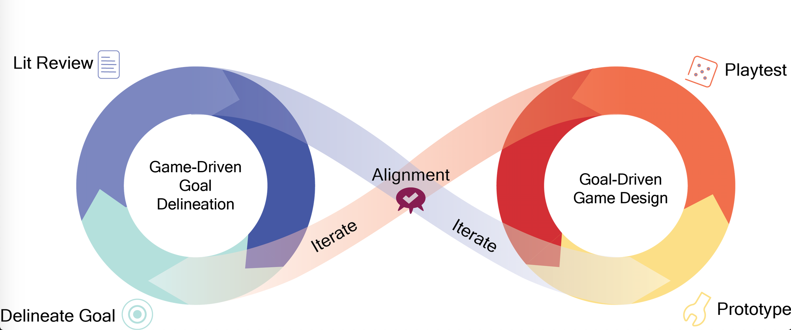

PolXR

Links:
Overview:
PolXR is an innovative platform developed under the VISER (Visualization for Enhanced Scientific Exploration in Research) initiative. This tool leverages Extended Reality (XR) technologies to provide immersive visualization of polarimetric geospatial data, enabling researchers to analyze and interpret complex datasets in an interactive 3D environment.
Project Highlights:
- Developed as part of Columbia University’s Polar Geospatial Research Group.
- Empowers researchers to gain new perspectives on polarimetric data, enhancing decision-making and discoveries.
- Focuses on user-centered design to ensure accessibility and usability across technical expertise levels.
Key Features:
- Immersive Data Exploration: Transforms polarimetric geospatial datasets into interactive 3D and XR environments for enhanced understanding and analysis.
- Cross-Platform Compatibility: Supports VR and AR platforms, enabling researchers to engage with data through cutting-edge extended reality tools.
- Interactive User Interface: Offers intuitive controls for filtering, scaling, and rotating data visualizations, tailored for scientific exploration.
- Seamless Integration: Incorporates existing polarimetric data workflows, ensuring compatibility with common geospatial data formats.
Applications:
- Polarimetric geospatial research for environmental studies and climate change analysis.
- Advanced education and training in geospatial analysis using XR technologies.
- Visualization of complex datasets for policy-making and collaborative research.
Future Scope:
- Enhance multi-user collaboration tools for shared immersive research experiences.